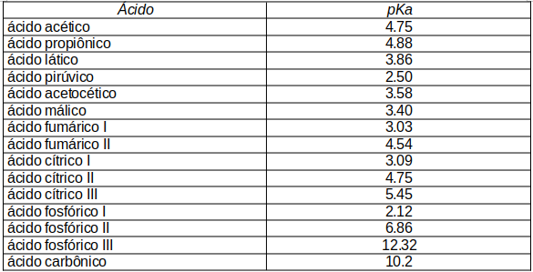
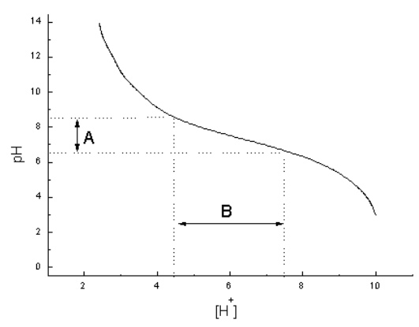

3 pH e Solução Tampão
3.1 Introdução
Pode-se afirmar com certo resvelo que termos como pH, pKa e tampão constituem o terror primal do estudante em bioquímica. Mas não é tão assustador quanto parece. Você já ouviu falar em xampu neutro ou já provou um abacaxi ácido ? Tem serventia ? Claro, pois o xampu neutro aparentemente não prejudica o couro cabeludo, e o abacaxi ácido é intragável. Então vamos tentar entender melhor essa noção de ácido e neutro, já que ela vem ao menos preservar nossa vetusta cabeleira e nosso bom senso alimentar. Ácido é uma substância com muito próton H+, neutro uma com o mesmo teor de H+ e OH-, e básica (ou alcalina), uma com muito OH-.
Por razões de formalismo químico, são atribuidos valores de 0 a 14 para se determinar a acidez de toda a gama de substância aquosas. Zero representa a acidez absoluta, 14 a alcalinidade absoluta, e 7, é claro, o ponto médio, a neutralidade absoluta. Diz-se absoluta pois se pode tomar faixas de acidez relativa das substâncias. Neste caso, tudo que estiver entre 0 e 7 será ácido, e entre 7 e 14 será básico ou alcalino. Os valores de 0 a 14 representam, na verdade, transformações matemáticas de concentrações de H+, mais explicitamente, uma transformação logaritmica. Assim, o valor 2 indica 0,01 moles por litro de H+, e 7, 0,0000001 moles por litro de H+. Como esses números são muito desagradáveis para ser representados, os cientistas tomaram o logaritmo negativo (- log) das concentrações de H+ para uma apresentação menos agressiva, chamando-a de pH. Dessa forma -log 0,01 é igual a 2, e -log 0,0000001 é igual a 7. Voilá.
Temos então uma representação menos fragmentada para valores de acidez, o que torna bastante útil se levarmos em conta que a acidez normalmente encontrada na Natureza varia entre 0,0001 e 0,00000001 unidades de moles de H+ por litro de solução aquosa.
Então o pH nada mais é do que uma representação de valores de acidez de uma solução. Uma solução diluída de vinagre ou ácido acético, por exemplo, tem pH 3, o que significa que ela possui em torno de 0,001 moles por litro de H+. Outros exemplos do cotidiano estão representados na ?fig-pHscala abaixo.
 | Observe que o pH é inversamente proporcional à acidez. Ou seja, quanto mais zeros aparecerem após a vírgula, maior será o valor de pH e, por conseguinte, menor a acidez da solução (solução muito diluída). Outro simbolismo normalmente encontrado em livros-texto sobre o assunto são denotados por pKa e o pI. O que vem a ser esses parâmetros ? Bom , em primeiro lugar você deve ter notado que pH, pKa e pI começam com a letra “p”. Esse “p” só está aí para que você se lembre tratar daquela operação logarítmica (- log).
| Observe que o pH é inversamente proporcional à acidez. Ou seja, quanto mais zeros aparecerem após a vírgula, maior será o valor de pH e, por conseguinte, menor a acidez da solução (solução muito diluída). Outro simbolismo normalmente encontrado em livros-texto sobre o assunto são denotados por pKa e o pI. O que vem a ser esses parâmetros ? Bom , em primeiro lugar você deve ter notado que pH, pKa e pI começam com a letra “p”. Esse “p” só está aí para que você se lembre tratar daquela operação logarítmica (- log).
O que vai importar mesmo é que “Ka” é uma constante de dissociação de ácidos, ou seja, uma constante qualquer relativa ao equilíbrio do ácido que está se dissociando na água. Em termos representativos, HA=H+ + A-, onde HA é forma protonada (com próton) e A- a desprotonada (sem próton ). Já o “I” do pI significa isoelétrico (cargas iguais), indicando que a substância tem o mesmo número de cargas positivas que o de negativas em solução. Tanto pKa quanto pI registram, portanto, um pH no qual o ácido encontra-se em equilíbrio na água (pKa), e um pH no qual uma substância tem carga nula em solução (pI). Ambos os conceitos são importantes para o estudo de biomoléculas e de soluções tampão.
3.1.1 Solução tampão
Um tampão é, basicamente, uma solução que varia pouco o seu pH, condição essencial para que qualquer célula, tecido ou organismo vivo possa realizar suas funções vitais, já que todo o metabolismo celular produz ácidos, na maior parte de suas operações, e álcalis, em minoria, os quais poderiam incompatibilizar os fenômenos vitais se acumulados nos tecidos de origem.
Uma solução tampão é sempre formada por um ácido e um sal derivado de uma base. Com esses dois compostos em mãos, além do conhecimento do pKa do ácido dessa solução, pode-se facilmente elaborar uma solução tampão. É assim que se produz uma solução tampão em laboratórios, e é assim que a Natureza trabalha para impedir mudanças de pH perigosas ao organismo.
Exemplificando, o ser humano possui um pH fisiológico sanguíneo em torno de 7.2 a 7.4. Se não existissem tampões naturais, e esse pH baixasse para 6.8, o indivíduo certamente iria a óbíto.

3.2 Detalhes
Em poucas palavras, o pH mede a acidez de uma solução, o pKa mede a força de ionização de ácidos fracos, o pI determina o pH em que um íon possui carga nula, e a solução tampão especifica uma mistura de um ácido com um sal capaz de resistir à variação de pH em solução. O pH é representado pela função logaritma da concentração hidrogeniônica em solução ( -log [H+] ou 1/log [H+] ).
Assim, uma solução de 1M de HCl tem pH 1, o suco gástrico tem pH 1,5, o vinagre e o refrigerante pH 3, a cerveja e o vinho tinto pH 4, a água do mar e a clara de ovo pH 8, a amônia doméstica pH 12, o alvejante pH 13, e uma solução de 1M de NaOH, pH 14. Em equilíbrio, soluções ácidos/bases fracos se dissociam parcialmente, podendo ser representados pela equação de Arrhenius:
\[ HA <---> H^+ + A^- \] \[ Ka = \frac{[H^+] [A^-]}{[HA]},~com~pKa = - log~Ka \]
Dessa forma, ácidos/bases fracos podem ter sua “força” de dissociação indexada pelo valor da constante de ionização ou dissociação Ka, que informa “quantos dissociam” e “quão fracos eles são”. Normalmente, a dissociação de um ácido/base fraca tende a ser de 1 para cada 102 - 1013 íons H+ / OH- liberados em solução. Com ácidos/bases fracos é possível se elaborar sistemas tampão, soluções compostas por ácidos e base conjugadas, e que atuam na manutenção do pH. Esta manutenção é vital em todo processo celular, para a interação entre macromoléculas, e para a atividade do arcabouço enzimático.
No plasma sanguíneo, variações mínimas além da faixa de pH fisiológico de 7,3-7,4 podem resultar em paralisação de sistemas enzimáticos com danos celulares irreparáveis, levando à morte em casos extremos (cetoacidose diabética, hiperamonemia adquirida), quando não houver mecanismos de compensação para essas variações. São vários os compartimentos de pH existentes e atividade protéica/enzimática correspondentes. Assim, pepsina estomacal atua sob um pH ótimo de 2, tripsina pancreática em pH 7, e fosfatase alcalina em pH 8. Um sistema tampão funciona como um reservatório de ácidos com bases conjugadas em concentrações aproximadamente iguais, que neutralizam limitadamente a adição de um álcali ou de um ácido à solução.
Quando a solução tampão possui 50% de ácido e 50% de base conjugada, pode-se afirmar que ela está com o seu reservatório completo, no que tange à neutralização de pequenas quantidades de base ou de ácido adicionadas a ela, respectivamente. Nesta situação, o pH da solução tampão tem valor igual ao pKa do par conjugado, e solução encontra-se com o seu potencial tamponante máximo. Na prática, isto significa dizer que a adição de ácido ou base à solução resiste a uma variação de até duas unidades de pH. Esse reservatório também é garantido pela capacidade de dissociação do ácido/base fraca, e pela dissociação da água. Pela equação de Arrhenius, a dissociação desta última pode ser representada por:
\[ H_2O <----> H^+ + OH^- \]
\[ ,~K_{H2O}=[H^+][OH^-] \]
Levando-se em conta que [H2O] é de 55,5M, e que \(K_{H2O}\) é de \(1,8x10^{-16}\) M (medidas de condutividade elétrica), então o produto “[H+] [OH-]” é de \(9,99x10^{-15}\) M², ou \(1x10^{-14}\) M². Assim, quando [H+] e [OH-] forem equivalentes em solução (água), então [H+] será de \(1x10^{-7}\) M, e o pH será 7 (solução neutra a \(25^o\) C). O produto “[H+] [OH-]” é também denominado Kw (“water”).
A expressão que relaciona o pH ótimo de tamponamento de uma solução com o pKa do par ácido/base conjugado da mesma é a equação de Henderson-Hasselbach:
\[ pH=pKa+log\frac{aceptor~de~H^+}{doador~de~H^+} \]
É possível elaborar uma solução tampão em laboratório por três vias distintas:
- Aplicando-se a relação de Henderson-Hasselbach com pKa conhecido para o par ácido/base conjugado;
- Diluindo-se a mesma quantidade (concentração molar) de ácido e de base conjugada em solução aquosa;
- Preparando a solução ácida, e ir adicionando a base conjugada até o pH desejado (desde que este possua valor próximo do pKa do par).

Não obstante o preparo de cunho prático, a 1a. forma possui o formalismo adequado.
Os tampões mais importantes no homem são aqueles cujo pKa se aproxima do pH fisiológico, como o bicarbonato (plasmático e extracelular, pKa = 3,8, mas que aumenta para 6,38 em presença de CO2) e o fosfato (intracelular, pKa = 6,86). O tampão bicarbonato age simultaneamente à disponibilidade de dióxido de carbono presente:
\[ CO_2 + H_2O <---> H_2CO_3 <---> H+ + HCO_3^- \]
Assim, como é natural dos tecidos produzirem energia à custa de sua própria acidificação, os tampões fisiológicos encontram-se melhor preparados para combater variações dentro de uma faixa ácida, mais do que alcalina, o que justifica ser o valor de pKa dos mesmos inferior ao neutro. A ?fig-curvaTamp 7 exemplifica graficamente a faixa de tamponamento de um sistema intracelular formado por combinações de fosfato de sódio.
{curvaTamp}
3.2.1 Ponto isoelétrico (isoiônico)
O pI, ou ponto isoelétrico da solução, é aquele representado pelo pH de uma solução na qual o íon (composto, carboidrato, proteína, etc) considerado encontra-se com sua carga líquida nula (soma das cargas positivas e negativas é zero), impedido de mobilidade em um campo elétrico, ou sem interação com a água. Neste ponto, o íon deixa a solução aquosa, precipitando-se.
Alternativamente há o conceito de ponto isoiônico, também pI, no qual o valor experimental é obtido por titulação ácido-básica, e não por mobilidade em campo elétrico.
Exemplificando, a caseína, principal proteína do leite, precipita em temperatura ambiente quando o pH da solução atinge o seu pI, de valor 4,6.
3.3 Aplicação.
Mecanismos de hiperventilação (respiração de cachorrinho, liberação de CO2) e hipoventilação (inspiração profunda, retenção de CO2) podem corrigir, dessa forma, pequenas variações de pH. Proteínas desempenham, ainda que fracamente, um papel tamponante, devido à presença da histidina, cujo pKa está próximo do fisiológico, 6,0. Os mecanismos fisiológicos do organismo para a manutenção do equilíbrio ácido-básico incluem os pulmões (modulação do sistema bicarbonato pela variação da pressão de CO2 no centro respiratório, e compensação de variações metabólicas de pH) e os rins (excreção modulada de H+ pelas células tubulares, acompanhada de reabsorção de HCO3- e Na+, e secreção de NH3). A Figura 3.3 exemplifica algumas disfunções do equilíbrio ácido-base.

Alguns ácidos orgânicos tamponam vacúolos de células vegetais, e a amônia tampona a urina. A disponibilidade de nutrientes para os vegetais é bastante influenciada pelo pH dos solos. Assim, a maior disponibilidade de P para as plantas é assinalada em pH de solos acima de 6, ao passo que para o Fe, acima de 7. Mo e Se estão melhor disponíveis em pH alcalino. Dentre os elementos traço, o Mn é o mais afetado pela variação de pH dos solos. Processos biológicos como o da nitrificação diminuem muito em pH 6, tornando-se insignificantes em pH 5. O controle do pH dos solos pode ser reallizado pela adição de cal - óxido de cálcio (para corrigir acidez) ou de enxofre (para corrigir alcalinidade).
3.3.1 Variações de pH entre os animais.
Existe alguma variação de pH na saliva e suco gástrico de animais. Exemplificando, o suíno e o cavalo possuem um pH salivar de 7,4, enquanto que o bovino pode chegar a 8,3, em decorrência de uma presença significativa de bicarbonato, e em decorrência da atividade da enzima urease de origem bacteriana, a qual quebra a uréia salivar do gado, liberando amônia, de caráter alcalino. Essas variações encontram significância se nos deparamos com as grandes diferenças de volume de saliva produzido ao longo de 24 horas para cada rebanho, representando 5 litros para carneiro, 42 para cavalo e 60 para bovinos. O pH gástrico também varia entre esses animais, atingindo 1,3 em ovinos, e de 2 a 4 em bovinos.
Curiosamente, cavalos podem flutuar o seu pH gástrico entre 1,1 e 7,0. No trato gastrintestinal de aves, o proventrículo faz o papel do estômago, com faixa variando entre 0,5 e 5,5 (média em torno de 2,7), e os demais tecidos, do duodeno ao cólon, entre 4,9 e 8,0 (média em torno de 6,6). De modo geral, carnívoros possuem um pH gástrico mais baixo que herbívoros, o que é causado pelo aumento no teor secretado de HCl, conjuntamente com atividade bacteriana produzindo ácido acético, lático e butírico. Em aves o papel do estômago é realizado pelo pro-ventrículo, produtor de HCl e pepsina, enzima que auxilia na hidrólise de alimento protéico.
3.3.2 Leitões e dieta ácida.
O período de 7 a 14 dias pós-desmame em leitões pode ser acompanhado de alterações digestivas que caracterizam uma imaturidade face à transição do regime alimentar do leite de porca para uma dieta seca e sólida das rações. Neste sentido, a desmama precoce pode resultar em baixa produção de ácido clorídrico gástrico e atividades enzimáticas digestivas, resultando em aproveitamento incompleto das dietas formuladas. Mais ainda, essa adaptação parece estar relacionada à predisposições à malabsorção, possíveis episódios de desidratação, diarréias e infecções entéricas. Vários métodos tem sido propostos para a acidificação de dietas para leitões jovens , incluindo a adição simples de ácidos orgânicos (fumárico e cítrico) e inorgânicos, e a combinação de vários ácidos (Syneracid, 0,35 %) e bactérias lácticas que permitam a acidificação em diferentes sítios do trato gastrointestinal.
Maior sucesso tem se verificado com ácidos protegidos, já que a utilização de ácidos nas dietas pode levar a uma queda brusca do pH gástrico nos animais. Os ácidos protegidos são formados por uma cobertura protetora de ácidos graxos que permite a liberação lenta e contínua dos ácidos ao longo do trato digestivo, reduzindo a taxa de absorção e prolongando o processo de acidificação no intestino delgado (Triacid® 300 a 0,3 %).
3.3.3 Aditivos de solos e pH.
O controle de pH nos solos é de vital importância para a manutenção da atividade microbiana, cuja otimização entre 6,0 e 6,5 unidades de pH desencadeia os processos de decomposição da matéria orgânica e fixação de nitrogênio, com consequente disponibilidade aumentada de nutrientes. Por outro lado, teores de acidez e alcalinidade indesejáveis para os solos estão intimamente relacionados à solubilidade e disponibilização reduzida de alguns minerais às plantas (vide tabela abaixo).

Como regra geral, os solos brasileiros são considerados ácidos por definição, o que significa possuirem baixo pH, pouco cálcio e magnésio disponíveis à atividade vegetal, excesso de alumínio, manganês e, algumas vezes, ferro. Além disso, esses solos possuem condições desfavoráveis à mineralização microbiana da matéria orgânica, fixação de nitrogênio e adubação em geral, quer nitrogenada, potássica ou fosfatada. Neste sentido a correção de pH dos solos pode ser realizada com um procedimento de calagem, o qual tende a normalizar a acidez daqueles.
A calagem é normalmente realizada com derivados calcários, como o gesso, o gesso agrícola ou fosfogesso (sub-produto da indústria de ácido fosfórico). Esse último possui menor poder de neutralização do que o calcário, porém tende a reduzir a disponibilidade de alumínio tóxico às raízes das plantas. Via de regra, o calcário pode ser melhor aproveitado na correção superficial dos solos, enquanto que o gesso na sub-superficial. Os principais fatores que definem o uso e teores de um ou outro composto de calagem são a água e o tempo. O calcário não se dissolve em solo seco, enquanto que o gesso possui menor exigência para tal.
Embora o calcário presente apresente um efeito residual no solo, a acidez pode retornar como consequência natural de lixiviação pelas chuvas, troca de base por prótons H+ pelas culturas, uso de adubos nitrogenados, e trocas de potássio, alumínio e manganês com o emprego de adubos potássicos.